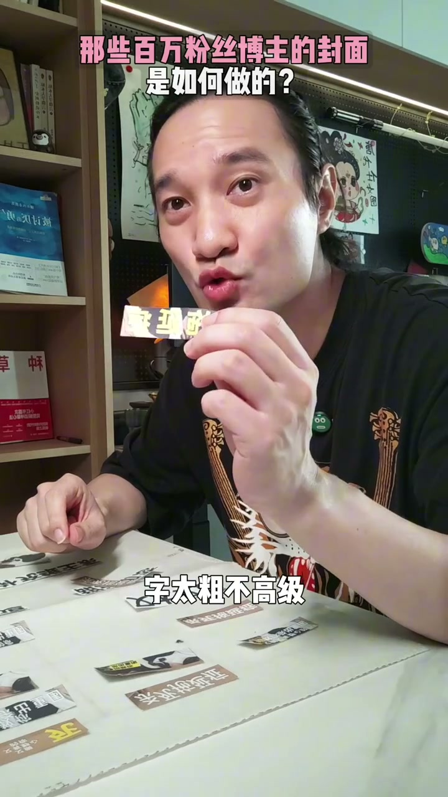
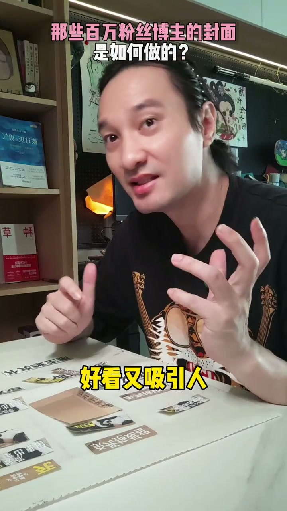
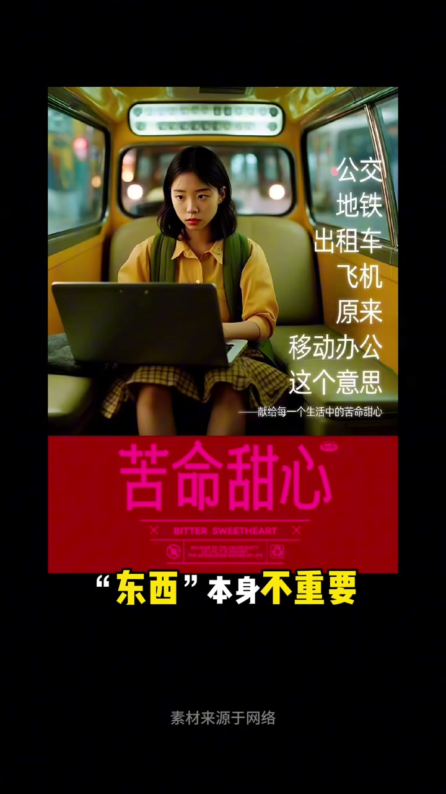

01
中文
人物放左右，文字上下排。
EN
Subject left-right, text top-bottom.
表达提示subject left-right（人物放左右）

Scene English · 封面设计 · 博主封面套路
How Million-Follower Bloggers Make Covers
🎧 语音讲解
The Top-Middle-Bottom Template
情境人物放左右、文字上下排，是经典的上中下构图模板。标题撕个角，换标签压脚，构图有冲击力；字太粗不高级，换个受高（瘦高）的字体，错位排版有动感。语域：封面设计，构图讲解。
人物放左右，文字上下排。
Subject left-right, text top-bottom.
表达提示subject left-right（人物放左右）
这是上中下构图模板。
It's the top-middle-bottom template.
表达提示top-middle-bottom（上中下）
错位排版，更有动感。
Offset layout adds a sense of motion.
表达提示a sense of motion（动感）
上中下构图 → top-middle-bottom / the classic grid
错位排版 → offset layout / staggered type

Pretty and Eye-Catching
情境太乱了要怎样？好看又吸引人。文字上下排，点缀深色小字和标签。换一个能吸引更多人的文案，就解锁了超现实主义。观众看到的本身不重要，能让它成为谁才重要。语域：封面设计，理念讲解。
文字上下排，点缀深色小字。
Text top-bottom, with dark small accents.
表达提示dark small accents（深色小字）
换一个更吸引人的文案。
Swap in a more attention-grabbing copy.
表达提示attention-grabbing copy（吸引人的文案）
让它成为谁，才重要。
What it becomes is what matters.
表达提示what it becomes（它成为谁）
超现实主义 → surrealism / beyond reality
吸引人的文案 → grabbing copy / a catchy line

Hands-On Demo
情境加图把背景跟人物都加上来，点击构图调整位置大小，加字选一个免费字体，非同引白色字（荧光白），置于人物后面，复制一个改校文案，再来一个换亮黄色，添加名称换字体和背景的深色，加一个小标签在右上角。语域：封面设计，操作演示。
加图，背景人物都加上。
Add images — both background and subject.
表达提示background and subject（背景人物）
调整位置大小，加字。
Adjust the size and add the text.
表达提示adjust the size（调整大小）
加一个小标签，在右上角。
Add a small tag at the top-right corner.
表达提示a small tag（小标签）
免费字体 → a free font / no-cost type
改校文案 → polish the copy / refine the line

The Cover's Purpose Is to Attract
情境做了两千多张海报才发现：封面存在的目的就是吸引人。同一个选题设计，六千赞和四万差距为啥这么大？我们来做实验。语域：封面设计，收尾。
封面存在的目的，就是吸引人。
A cover exists to attract.
表达提示to attract（吸引人）
同一选题，六千赞和四万赞差距大。
Same topic: 6k likes vs. 40k — huge gap.
表达提示a huge gap（差距大）
我们来做实验。
Let's run an experiment.
表达提示run an experiment（做实验）
吸引人 → attract / draw people in
做实验 → run an experiment / test it out
说构图模板
说封面理念
说实做
说封面目的
「人物放左右」用 subject left-right。
「换文案」用 swap in a grabbing copy。
「目的是吸引人」用 exists to attract。
「六千和四万」用 6k vs. 40k。